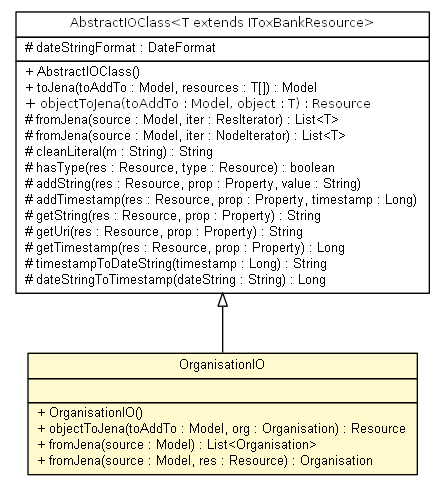

net.toxbank.client.io.rdf
Class OrganisationIO

java.lang.Object
 net.toxbank.client.io.rdf.OrganisationIO
net.toxbank.client.io.rdf.OrganisationIO
- All Implemented Interfaces:
- IOClass<Organisation>
public class OrganisationIO
- extends Object
- implements IOClass<Organisation>
| Methods inherited from class java.lang.Object |
clone, equals, finalize, getClass, hashCode, notify, notifyAll, toString, wait, wait, wait |
OrganisationIO
public OrganisationIO()
toJena
public com.hp.hpl.jena.rdf.model.Model toJena(com.hp.hpl.jena.rdf.model.Model toAddTo,
Organisation... resources)
- Specified by:
toJena in interface IOClass<Organisation>
fromJena
public List<Organisation> fromJena(com.hp.hpl.jena.rdf.model.Model source)
- Specified by:
fromJena in interface IOClass<Organisation>
Copyright © 2011 ToxBank project. All Rights Reserved.